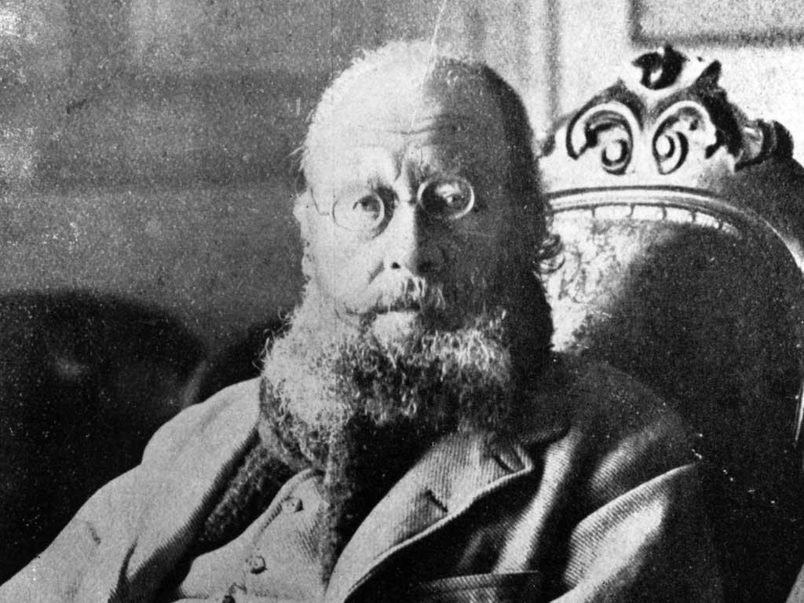
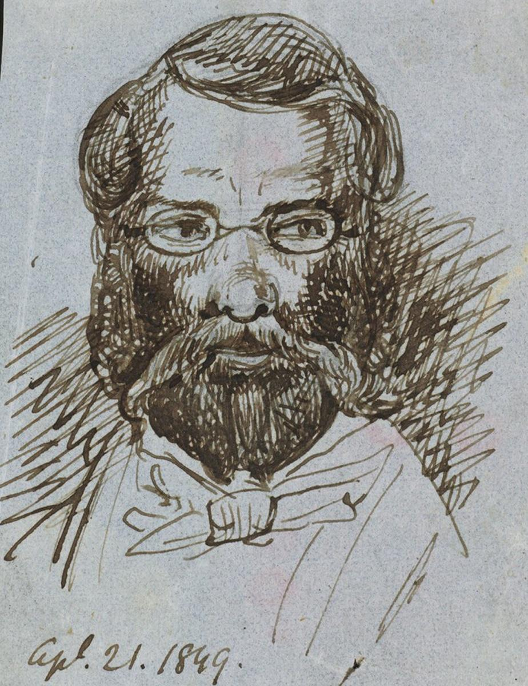
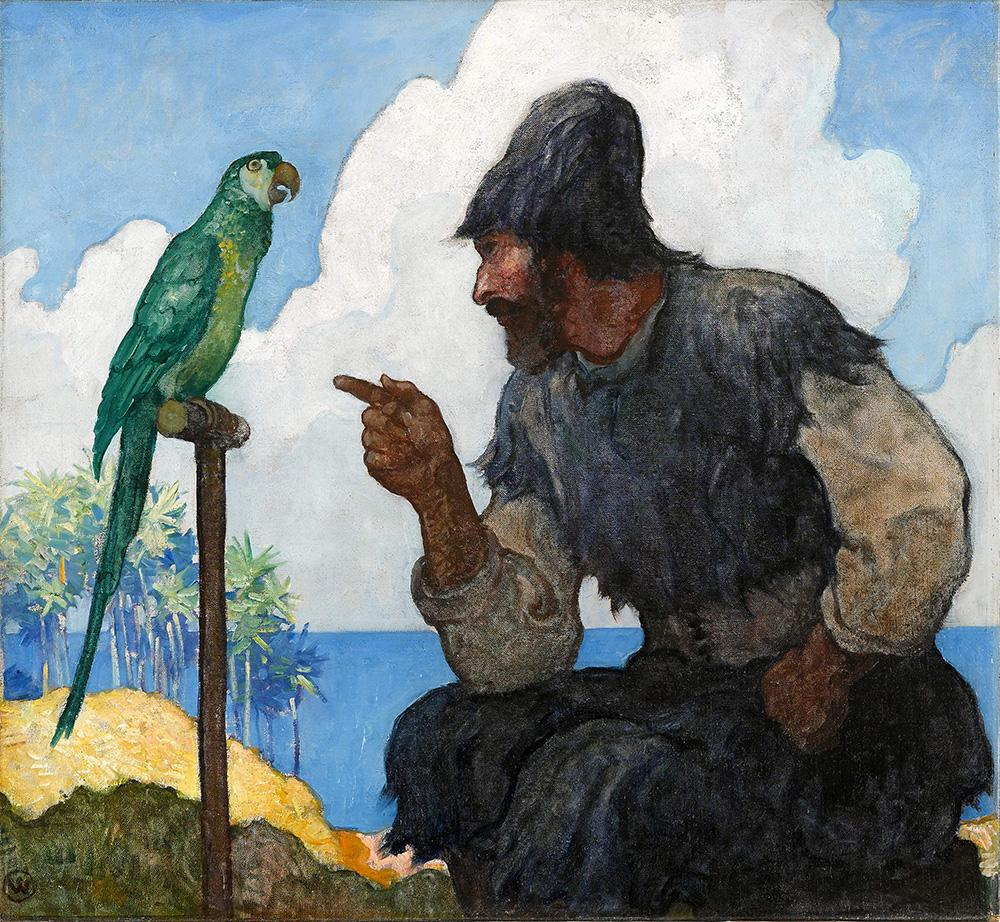
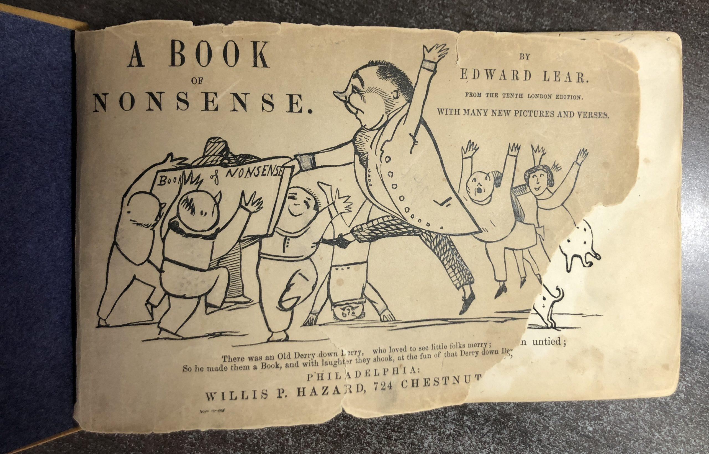

на главную страницу << >> English main page
>> English main page
Эдвард Лир
(Edward Lear, 1812- 1888)

HOW pleasant to know Mr. Lear,
Уважаемый мистер Лир,
Удививший почтенный мир -
Говорят, что он из больших задир,
Но по-своему очень мил.
Он умом прихотлив и строг,
А по виду совсем старик.
Его крупный нос как большой вопрос,
Борода как чужой парик.
У него есть два уха и пара глаз,
И пальцы (считать их мне лень).
Он когда-то пел, как морской тюлень,
А теперь он молчит, как пень.
Он сидит в гостинной, где много книг
И очень мягкий диван.
Он большой любитель старинных вин,
Но он не бывает пьян.
У него большое число друзей.
И старый облезлый кот.
Он носит шляпу наоборот
И круглый, как шар, живот.
Когда он выходит в белом плаще
За ним бежит детвора
И плачет, и хнычет, и пальцами тычет,
И громко кричит "Ура!"
Он стонет у синего моря,
Ревёт на вершине холма.
Он ест заварные пирожные
И платит за них сполна.
Он знает испанский со словарём
И любит пиво-имбирь.
Вот почему - вопреки всему -
Да здравствует мистер Лир!
Перевел Яков Фельдман
Однажды мистер Длинноног
В коричневом и сером
Гулял один по берегу
И на песок присел он.
И среди гальки увидал -
Прикрыв себя зонтом,
Шёл модный мистер Хлопокрыл
В иссиня золотом.
"Угощайтесь, - сказал тот, - сосед,
У меня с собою обед."
Обед они съели (вкусный, скромный)
И играть сели (во что, не помню)
"Что же, мистер Хлопокрыл,
Вас не видно при дворе?"
Длинноног его спросил,
Расслабившись в игре.
"Вы весь такой блестящий,
Блистательный такой,
Я очень вам советую
Сходить туда со мной.
Там свечи и кувшины,
И на полу ковры,
Король и королева
Учтивы и добры.
Он в зелёном, она в красном,
Это смотрится прекрасно".
"Ах, милый мистер Длинноног,-
Ответил Хлопокрыл,-
Мне не хватает длинных ног,
А то б и я, конечно, мог,
И я б, конечно, был.
Но дело в том, что при дворе
Весьма важна походка.
Не потанцуешь на ковре
Такой ногой короткой."
И они помолчали,
Преисполнясь печали.
"Я слышал, мистер Длинноног,
Что вы прекрасно пели
И что на этом поприще
Премного преуспели.
Но больше не поёте.
Скажите, отчего?"
Спросил учтивый Хлопокрыл
Соседа своего.
"А может вы споёте?
Послушать голос редкий
Всплывут, счастливые, со дна
И крабы и креветки."
"Ах, милый мистер Хлопокрыл,
Я больше не пою.
Я расскажу вам грустную
Историю свою.
Шесть ног моих так выросли
И стали так длинны.
Вздохнуть я больше не могу
До нужной глубины
Во всю брюшную полость.
Пропал мой прежний голос."
И они помолчали,
Преисполнясь печали.
Они сидят на берегу,
Исполнены блаженства,
И думают о том, что мир
Далёк от совершенства.
Что ноги слишком коротки
И чересчур длины.
И в этом нет ничьей вины,
Совсем ничьей вины..
Перевел Яков Фельдман
Я знавал старика из Непала.
Как то раз с кобылицы упал он
И разбился (бывает и с мастером),
Но заклеили (тестом и пластырем),
И на нём незаметно нимало.
Я знавал короля из Непала.
Как то раз с королевы упал он
И разбился (бывает и с мастером),
Но заклеили (тестом и пластырем),
И на нём незаметно нимало.
Перевел Яков Фельдман
The Owl and the Pussy-Cat
The Owl and the Pussy-Cat went to sea...
На лодке гороховой Филин и Кошка
Отправились в синее море
Взяли с собою меда немножко
И денег довольно много.
Филин на звездное небо глядел
И мурлыкал под звон гитары:
»О, прекрасная киска,
Мы с тобою так близко,
Мы такая прекрасная пара!»
И Кошка сказала:
»О тебе я мечтала,
Твоя песня подобна клаксонам!
Хватит просто встречаться,
Нам пора повенчаться.
Но где же достать кольцо нам?»
И они поплыли, и плыли год,
И увидели – в темном лесу
Стояла под дубом свинья в парике
С чудесным кольцом в носу.
В носу!
В носу!
С чудесным кольцом в носу.
«О, милая свинка!
Не продашь за два шиллинга
Кольцо нам?» «За два – продам.»
И движением рук
Повенчал их индюк,
Что живет на вершине холма.
Они ели халву.
Они ели айву
И ломтики ветчины.
И рука в руке
На прибрежном песке
Танцевали при свете луны.
Луны!
Луны!
Танцевали при свете луны.
Перевел Яков Фельдман
   
© 2001 Elena and Yakov Feldman